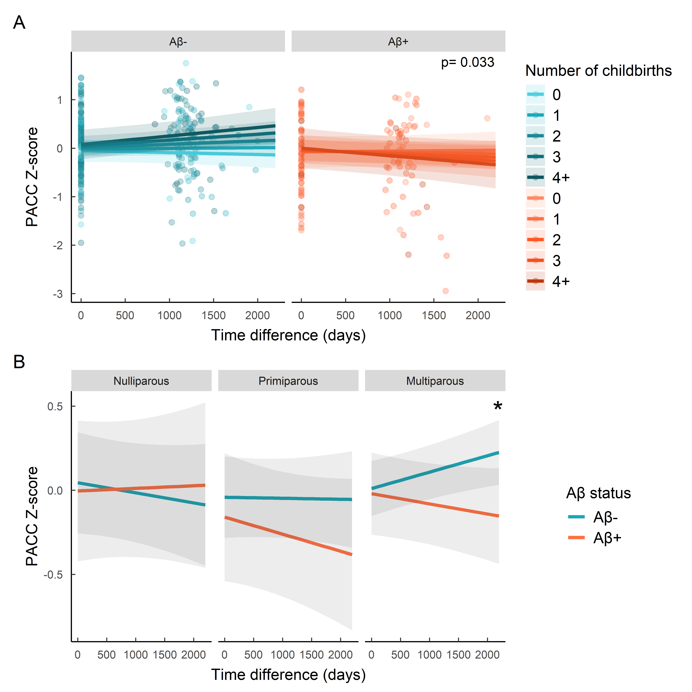
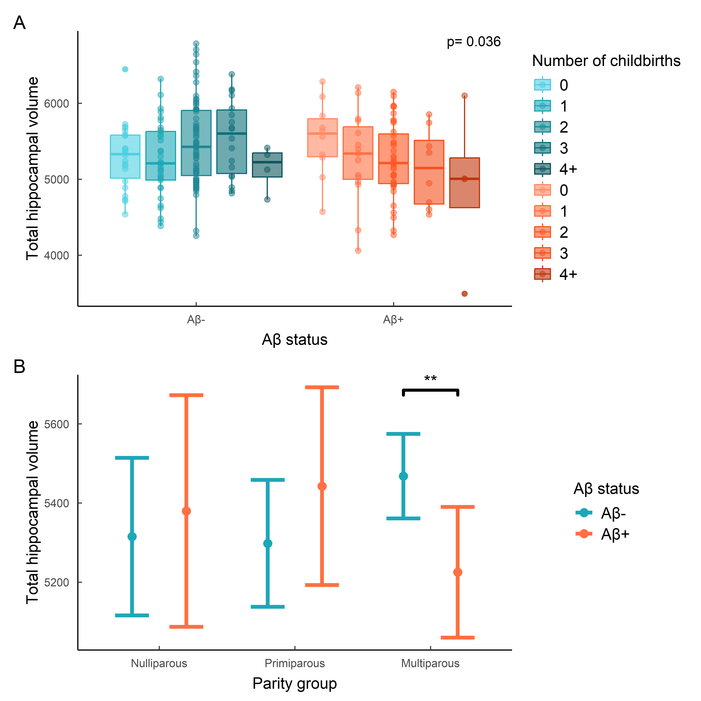

| Variables | N | 0 N = 391 |
1 N = 541 |
2 N = 1261 |
3 N = 271 |
4+ N = 81 |
p-value2 |
|---|---|---|---|---|---|---|---|
| Age at first visit, Mean (SD) | 254 | 58.6 (55.3, 62.3) | 59.9 (56.7, 63.7) | 62.6 (58.4, 65.1) | 61.2 (58.1, 64.8) | 66.2 (61.5, 68.6) | <0.001 |
| Aβ status, Count (%) | 229 | 0.8 | |||||
| Aβ- | 23 (70%) | 34 (69%) | 72 (64%) | 19 (70%) | 4 (50%) | ||
| Aβ+ | 10 (30%) | 15 (31%) | 40 (36%) | 8 (30%) | 4 (50%) | ||
| APOE-E4 carrier, Count (%) | 254 | 0.4 | |||||
| Carrier | 19 (49%) | 23 (43%) | 72 (57%) | 13 (48%) | 3 (38%) | ||
| Non-Carrier | 20 (51%) | 31 (57%) | 54 (43%) | 14 (52%) | 5 (63%) | ||
| Education (years), Mean (SD) | 254 | 17.0 (12.0, 18.0) | 12.0 (10.0, 15.0) | 12.0 (10.0, 16.0) | 13.0 (10.0, 18.0) | 11.0 (8.0, 12.0) | 0.013 |
| Baseline Total Intracranial Volume (cm3), Mean (SD) | 221 | 1,248,730 (1,192,260, 1,320,610) | 1,212,390 (1,158,220, 1,286,890) | 1,251,265 (1,196,015, 1,321,960) | 1,266,360 (1,199,030, 1,294,720) | 1,234,990 (1,200,440, 1,320,140) | 0.3 |
| Baseline Hippocampal volume, Mean (SD) | 221 | 5,347 (5,024, 5,675) | 5,249 (4,890, 5,629) | 5,325 (5,009, 5,771) | 5,433 (5,033, 5,846) | 5,007 (4,733, 5,413) | 0.4 |
| Follow-up Hippocampal volume, Mean (SD) | 203 | 5,259 (4,864, 5,493) | 5,160 (4,803, 5,440) | 5,239 (4,889, 5,587) | 5,196 (4,756, 5,694) | 4,980 (4,849, 5,223) | 0.7 |
| Baseline PACC z-score, Mean (SD) | 234 | 0.31 (-0.34, 0.69) | 0.05 (-0.51, 0.47) | -0.11 (-0.56, 0.33) | 0.27 (-0.52, 0.76) | 0.07 (-0.55, 0.57) | 0.2 |
| Follow-up PACC z-score, Mean (SD) | 203 | 0.21 (0.01, 0.62) | 0.06 (-0.46, 0.55) | -0.01 (-0.41, 0.42) | 0.43 (-0.25, 0.71) | -0.73 (-1.21, 0.41) | 0.050 |
| 1 Median (Q1, Q3); n (%) | |||||||
| 2 Kruskal-Wallis rank sum test; Fisher’s exact test | |||||||
Parity and AD specific neurodegeneration
1 Abstract
300 words
2 Introduction
Alzheimer’s disease (AD) is a neurodegenerative disorder clinically characterized by progressive memory loss. Amyloid protein accumulation, a hallmark clinical marker of AD, is thought to trigger an inflammatory cascade, leading to further accumulation of tau protein, neurodegeneration, and cognitive impairment. Being biologically female is one of the main non-modifiable risk factors for AD [1]. Females who develop AD show a worse cognitive trajectory after mild cognitive impairment (MCI) diagnosis [2], faster atrophy rate in the hippocampus [3], and may benefit less from amyloid-antibody based therapies [4]. These differences in pathology suggest that sex-dependent pathways or biological processes may drive distinct pathological trajectories. In particular, pregnancy is a female specific event that remains poorly understood, and its consequences on ageing even more so.
The effect of parity on brain ageing and cognitive trajectory remains relatively unknown, and available evidence paints a complex picture. Epidemiological studies exploring a potential association between parity and AD show a potential link between grand multiparity and dementia [5]; [6]. Recent evidence indicates that parity modulates women’s cognitive performance differently depending on their disease status. Specifically, a recent study using cross-sectional data from 456 female participants with dementia showed that higher parity was associated with enhanced executive function but reduced episodic memory [Lee et al., 2025]. Notably, this pattern was not observed in cognitively normal women.
However, these studies did not include AD-specific biomarkers, meaning they were limited to studying advanced dementia cases and lacked specificity of disease trajectory. To our knowledge, only two studies with mixed results have included AD biomarkers as dependent variables. A post-mortem histopathological study found that multiparity was associated with more neuritic plaques [7]. However, analysis using PET amyloid data from an observational cohort found no association between amyloid burden and parity or multiparity [8]. These results highlight the need for further examination of the link between parity and AD biomarker levels in women in the AD preclinical stage to disentangle mechanisms that might take place in early stages of neuropathological progression. This will enable us to identify women at risk and move towards more personalized preventive interventions.
The hippocampus is one of the first regions affected by AD, and whole hippocampal volume is a hallmark predictor of conversion from MCI to AD [9]. Importantly, pregnancy provokes significant changes to hippocampal structure and volume [10]. Animal models show decreased neurogenesis in the hippocampus during gestation and the postpartum period [11,12]. In humans, pregnancy is associated with hippocampal volume (HV) loss that persists for at least 6 years post-partum [13]. Importantly, the hippocampus is one of the first regions affected by AD, and HV is a hallmark predictor of conversion from MCI to AD [9]. Altered neurogenesis is linked to AD-related neuropathology and cognitive impairments [14]. Aß pathology can affect hippocampal neurodegeneration in the early stages of the AD continuum [15]. Therefore, parity-induced alterations to hippocampal structure may create a distinct neurobiological landscape that either increases vulnerability to, or modifies the progression of, AD-related degeneration.
We investigated the association between previous parity and amyloid load, and their combined effect on cognition and HV in postmenopausal CU women genetically enriched for the AD phenotype. We aimed to determine whether parity’s effect on HV persists in postmenopausal women and whether this interacts with AD-related neuropathology. We hypothesized that parity would interact with amyloid load such that women with low amyloid burden would exhibit higher HV and better cognitive performance with increasing parity. In contrast, the opposite pattern would be observed in amyloid-positive women.
3 Methods
3.1 Study population
This observational cohort study includes postmenopausal women from the ongoing ALFA+ study (Clinicaltrials.gov, NCT01835717) who completed at least the baseline visit. The second visit was included as well when data was available (average time between visits of 3.32 years). ALFA+ is a research cohort of middle-aged cognitively unimpaired participants, many of whom are offspring of AD patients, based in Barcelona, Spain. Participants undergo an extensive battery of tests, questionnaires and measurements every 3 years with the main aim of identifying the earliest pathophysiological changes in the preclinical AD continuum. The study was approved by the Independent Ethics Committee “Parc de Salut Mar”, Barcelona, and all participants gave written informed consent. Baseline visits took place between 2016 and 2019 and the follow-up visit between 2019 and 2022.
In brief, inclusion criteria were: 1) participants who had previously participated in the 45-65/FPM2012 study (ALFA parent cohort); 2) age between 45 and 75 years at the moment of the inclusion in the cohort; 3) long-term commitment to to undergo all tests and study procedures (MRI, PET, and lumbar puncture). Exclusion criteria included: 1) cognitive impairment (Clinical Dementia Rating [CDR] > 0, Mini-Mental State Examination [MMSE] < 27, semantic fluency < 12); 2) any significant systemic illness or unstable medical condition which could lead to difficulty complying with the protocol; 3) any contraindication to any test or procedure; 4) family history of monogenic AD. In addition, women with a history of cardiovascular-related gestational disease, such as preeclampsia, were excluded from our sample for analysis.
3.2 Reproductive variables
Parity was defined as the number of biological children and used as a continuous variable in our main analyses. This information was self-reported by individuals during an interview with a clinician at baseline visit.
3.3 Cognitive measures
Preclinical Alzheimer’s cognitive composite (PACC) was computed including the Total Paired Recall (TPR) and Total Delayed Free Recall scores of the Memory Binding Test [16], the Coding subtest of the Wechsler Adult Intelligence Scale-Fourth Edition (WAIS-IV), and semantic fluency, as defined in previous works [17]. Z-scores were computed for Visit 1 and 2.
3.4 AD biomarkers
CSF collection, processing, and storage in the ALFA+ study have been described previously [18]. CSF A42 and A40 were measured with the exploratory Roche NeuroToolKit immunoassays (Roche Diagnostics International Ltd, Rotkreuz, Switzerland) on a cobas e 601 module. Measurements were performed at the Clinical Neurochemistry Laboratory, Sahlgrenska University Hospital, Molndal, Sweden. Aß status (Aß+, Aß–) was defined using the cutoff of 0.071 for the ratio Aß42/40 [18], where any participant below this cutoff was considered to be Aß+.
3.5 Imaging data acquisition and preprocessing
Automatic Segmentation of Hippocampal Subfields (ASHS) software [19] was used on the T1, T2 and inversion recovery (IR) images to segment the hippocampal formation in the following sub-regions: Brodmann areas 35 and 36, cornu Ammonis (CA) 1, 2 and 3, dentate gyrus (DG), entorhinal cortex (ERC), parahippocampus (PHC), subiculum (SUB), and sulcus (SUL). All segmentations were visually inspected before proceeding with the statistical analyses.
Hippocampal values are reported in mm3. Values were collected at baseline and follow-up visit.
3.6 Covariates
HV analyses were adjusted by total intracranial volume, APOE carriership (dichotomous - carrier or non-carrier of the Apolipoprotein 4), years of education (continuous) and age at baseline visit (continuous). Cognitive analyses were adjusted for APOE carriership, years of education and age at baseline visit. All analyse estimates, standard errors and p values are reported adjusted for these covariates.
3.7 Statistical analyses
Analyses were conducted using R version 4.5.1.
Normality of residuals was checked in all linear models using the base R plot() function on model output. Collinearity was also checked for all models using the vif() function of the car package (v.3.1.3).
We first conducted simple linear regressions to examine the cross sectional effect of previous parity (exposure) on Aß load (outcome). We then conducted simple linear regressions to examine cross-sectional associations between parity and Aβ positivity (exposures) on hippocampal volume and PACC score (outcomes) using baseline visit data. Following this, mixed-effects linear models were used to assess longitudinal effects of parity and Aβ positivity (exposures) on hippocampal volume and cognitive change (outcomes) using baseline and follow-up visit data. These models included a three-way interaction term between parity, Aβ positivity, and time (interval between Visit 1 and Visit 2).
All models used a p-value threshold of p < 0.05.
Data imputation methods were implemented using the mice package in R (v.3.18.0) on covariates, but not exposure or outcome variables. For continuous variables, predictive mean matching with 5 donors was used. For categorical variables, logistic regression was used.
3.8 Sensitivity analyses
Analyses that showed a significant effect of parity on the outcome were reproduced using parity as a categorical variable to examine potential non-linear effects. The variable was defined as follows: nulliparous (0 childbirth), primiparous (1 childbirth) and multiparous (2+ childbirths). Because these analyses were underpowered for this group interaction, we also provide group comparison using estimated marginal means to examine specific parity group differences depending on Aβ load.
Additional linear regressions were also performed to explore the interaction between parity and Aβ positivity on individual hippocampal subfield volumes using baseline data. These analyses can be found in the supplemental materials. Given the exploratory nature of these analyses, results are reported without correction for multiple comparisons.
4 Results
4.1 Descriptive results
254 female participants from the ALFA+ project were included in our analyses at Visit 1, and 211 at visit 2. Out of the 43 participants who dropped out of the study between both visits, 30 oficially withdrew for personal reasons, 3 became unresponsive, 2 died, 5 showed accidental findings on their structural MRI and 3 showed altered cognitive states. Visit 1 included MRI data from 241 participants and cognitive testing from 234 participants. Visit 2 included MRI data from 203 participants and cognitive testing from 203 participants. Average time between visits was 3.32 years.
15.35% of our participants have no previous childbirths, 21.25% have 1, 49.6 have 2, 10.6 have 3 and 3.14 have 4 or more. Participants with higher parity were significantly older. No difference was observed between groups regarding Aβ status and APOE-ε4 carrier status (Table 1).
4.2 Effect of previous parity on amyloid status
No main effect of parity was found on amyloid load when looking at baseline data (β = -0.108, SE = 0.174, p=0.535).
4.3 Association between parity and amyloid status on cognition
No main effect of parity (β = 0.036, SE = 0.057, p=0.53) or interaction between parity and Aß status (β = -0.022, SE = 0.093, p=0.812) was found on PACC when looking only at baseline data .
4.4 Association between parity and amyloid status on cognitive trajectory
In the context of longitudinal data, introducing a 3-way interaction between parity, time and Aß positivity revealed a moderate yet significant effect on PACC z-score change (β = -9.636^{-5}, SE = 4.497^{-5}, p=0.033). Results suggest that Aß- women showed less cognitive decline with a higher number of children, while Aβ+ women the opposite (Figure X).

Reproducing the analysis using our 3 parity groups showed that the direction of the interaction was present in both primiparous and multiparous groups (Figure X). While the group interaction did not show yield any significant estimate, direct gorup comparison using estimated marginal means on predicted values indicated that the significant different slope between Aβ- and Aβ+ participants was present in multiparous women only (β=0.00016, SE=0.00006, p=0.009).
4.5 Cross-sectional association between pregnancy and amyloid status in Hippocampal volume
No significant main effect of parity on HV was found cross-sectionally (β = 49.099, SE = 39.437, p = 0.215). However there was an interaction between parity and Aβ status (β = -137.633, SE = 65.347, p = 0.036), showing that Aβ- women exhibited a positive relationship between parity and hippocampal volume, whilst Aβ+ women showed the opposite (Figure X).

When splitting women between nulliparous, primiparous and multiparous, the direction of the group interaction estimates indicated this interaction only took place in multiparous women, but no estimate showed significance (Figure x). Using estimated marginal effects for direct group comparison revealed that only multiparous women showed a difference in predicted HV depending on Aβ load (β= 242.9, SE=84.9, p=0.005).
4.6 Longitudinal association between parity and hipoccampal volume change
Time did not moderate the previously found parity and Aβ status interaction (β = -30.222, SE = 17.608, p = 0.088) . The effect previously seen was maintained over both visits (β = -0.105, SE = 5.466, p = 0.985), suggesting that the observed relationship is does not show differences in the rate of hippocampal atrophy over time
4.7 Post Hoc analysis
Code
PACC_wide<-cognition%>%
dplyr::select(subject, Visit, Z_PACC, FechaResultado)%>%
pivot_wider(values_from = c(Z_PACC, FechaResultado), names_from = Visit, names_prefix = "V")%>%
mutate(Z_PACC_diff = Z_PACC_V2-Z_PACC_V1,
FechaResultado_V1= as.Date(FechaResultado_V1, format = "%Y-%m-%d"),
FechaResultado_V2= as.Date(FechaResultado_V2, format = "%Y-%m-%d"),
cog_diff= as.numeric(FechaResultado_V2-FechaResultado_V1)/365.25)%>%
dplyr::select(subject, Z_PACC_diff, cog_diff, Z_PACC_V2, Z_PACC_V1)
data_all<-data%>%
filter(sex==2)%>%
left_join(.,PACC_wide)%>%
left_join(., ashs1)%>%
mutate(vol_HIPP = vol_CA1+vol_CA2+vol_CA3+vol_DG+vol_SUB)%>%
mutate(kids_total_factor = ifelse(kids_total==4, "4+", as.character(kids_total)),
kids_total_factor = factor(kids_total_factor, levels = c("0", "1", "2", "3", "4+")))%>%
mutate(scale_vol_HIPP= as.numeric(scale(vol_HIPP)),
scale_vol_tiv = as.numeric(scale(vol_tiv)),
tier_vol_HIPP = cut(vol_HIPP,
breaks = 3,
labels = c("Low", "Medium", "High")))%>%
drop_na(Z_PACC_V2)%>%
drop_na(scale_vol_HIPP)%>%
drop_na(cog_diff)Code
library(mediation)
test <- lm(Z_PACC_diff ~ scale_vol_HIPP + scale_vol_tiv + age_v1 + APOE_binary + education + cog_diff,
data = data_all)
summary(test)
model_mediator <- lm(scale_vol_HIPP ~ kids_total + age_v1 + APOE_binary + education + scale_vol_tiv,
data = data_all[data_all$A==0,])
# Model 2: Effect of parity and HV on cognition
model_outcome <- lm(Z_PACC_diff ~ kids_total + scale_vol_HIPP + scale_vol_tiv+ cog_diff + age_v1 + APOE_binary + education,
data = data_all[data_all$A==0,])
# Check your models
summary(model_mediator)
summary(model_outcome)
set.seed(123)
mediation_resultsa0 <- mediate(model_mediator, # Mediator model
model_outcome, # Outcome model
treat = "kids_total", # Independent variable
mediator = "scale_vol_HIPP", # Mediator
boot = TRUE, # Use bootstrapping
sims = 5000)
summary(mediation_resultsa0)
model_mediator <- lm(scale_vol_HIPP ~ kids_total + age_v1 + scale_vol_tiv+ APOE_binary + education,
data = data_all[data_all$A==1,])
# Model 2: Effect of parity and HV on cognition
model_outcome <- lm(Z_PACC_diff ~ kids_total + scale_vol_HIPP + cog_diff + age_v1 + scale_vol_tiv+ APOE_binary + education,
data = data_all[data_all$A==1,])
# Check your models
summary(model_mediator)
summary(model_outcome)
mediation_resultsa1 <- mediate(model_mediator, # Mediator model
model_outcome, # Outcome model
treat = "kids_total", # Independent variable
mediator = "scale_vol_HIPP", # Mediator
boot = TRUE, # Use bootstrapping
sims = 5000)
summary(mediation_resultsa1)Code
data_all%>%
filter(sex==2)%>%
drop_na(A)%>%
ggplot(aes(x= vol_HIPP, y= Z_PACC, group = kids_total_factor, colour=kids_total_factor))+
geom_point()+
geom_line(data = preds_post_hoc_A0, aes(x=x, y=predicted, group=kids_total_factor, colour=kids_total_factor), inherit.aes = F, size=1.3)+
geom_ribbon(data = preds_post_hoc_A0, aes(x=x, ymin= conf.low, ymax = conf.high, group=kids_total_factor), colour=NA, alpha=0.2, inherit.aes = F)+
geom_line(data = preds_post_hoc_A1, aes(x=x, y=predicted, group=kids_total_factor, colour=kids_total_factor), inherit.aes = F, size=1.3)+
geom_ribbon(data = preds_post_hoc_A1, aes(x=x, ymin= conf.low, ymax = conf.high, group=kids_total_factor), colour=NA, alpha=0.2, inherit.aes = F)+
facet_wrap(~A)+
th
preds_post_hoc2 <- ggpredict(fit_post_hoc2, terms = c("vol_HIPP", "parous_group", "A"))%>%
as.data.frame()
vol_HIPP_solo<-data_all%>%
dplyr::select(subject, vol_HIPP, vol_tiv)
test_data<-data_cog_long%>%
left_join(., vol_HIPP_solo)
test<-lmer(Z_PACC ~ kids_total*time_diff +age_v1 + vol_HIPP + vol_tiv +APOE_binary + education +(1 | subject), test_data[test_data$sex==2 & test_data$A==1,])
summary(test)
data_all%>%
drop_na(A)%>%
ggplot(aes(x=vol_HIPP, y= Z_PACC_diff, colour = parous_group))+
geom_point()+
geom_smooth(method="lm")+
facet_wrap(~ A)
data_all_A0_0<-data_all%>%
filter(A==0, parous_group=="0")
data_all_A0_1<-data_all%>%
filter(A==0, parous_group=="1")
data_all_A0_2<-data_all%>%
filter(A==0, parous_group=="2+")
data_all_A1_0<-data_all%>%
filter(A==1, parous_group=="0")
data_all_A1_1<-data_all%>%
filter(A==1, parous_group=="1")
data_all_A1_2<-data_all%>%
filter(A==1, parous_group=="2+")
data_all_A0<-data_all%>%
filter(A==0)
data_all_A1<-data_all%>%
filter(A==1)
cor(data_all_A1$Z_PACC_diff, data_all_A1$vol_HIPP)
plot(data_all_A0$Z_PACC_diff, data_all_A0$vol_HIPP)5 Discussion
In this study, we explored the potential interaction between parity and amyloid accumulation on cognition and HV, two markers of AD. In women with low Aβ load, higher parity was associated with lesser cognitive decline and higher HV. In contrast, in women with high Aβ load, higher parity was associated with greater cognitive decline and lower HV. The effect of this interaction on cognitive trajectory appears present in both primiparous and multiparous women, but stronger in the latter. However, the effect of this interaction on HV seems only present in multiparous women. Together, this evidence presents a compelling case for long-term effects of previous pregnancies interacting with AD pathways in postmenopausal women with enriched AD genetic risk, affecting cognitive trajectory and HV. These results offer an explanation for the mixed findings from studies examining a link between parity and AD risk by shedding light on an interaction that drives opposite effects depending on amyloid burden.
Parity did not independently affect cognitive trajectory but instead, its effect was moderated by amyloid load. These results are congruent with the mixed findings from previous studies examining the role of cognitive decline and parity that do not include biomarkers data. Here, our results indicate that being on a trajectory of amyloid accumulation, a known early marker of prodromal AD, changes the direction of effect of parity on cognition. Although we evaluated overall cognition which is closely linked with dementia-related markers, it is possible that this association might be domain-dependent, especially when looking at more advanced dementia cases [20]. The direction of this interaction was present in both primiparous and multiparous women, but only significant in the latter, suggesting the effect could be additive.
Similarly, amyloid load moderated the effect of parity on HV, but did not predict it independently. Whilst evidence suggests the effect of gestation on HV is visible up to at least 6 years postpartum [13], whether this effect is still visible in older adults is unknown. Although grand multiparity appears to be associated with lower HV [8], we do not know which late-life biological mechanisms drive this change. Here, our analyses suggest that parity influences HV volume differently based on pathological burden. However, a wide knowledge gap remains, since our current window of observation only covers postmenopause, therefore ignoring the effects of the menopausal transition. This factor should be crucial to our understanding of this phenomenon given the hippocampus’ affinity for sex hormones [21]. Interestingly, the effects observed in our analyses were independent of time, which could indicate that the trigger point for these differences could have occurred before menopause. This warrants further research focusing on the menopausal window and hippocampal volume.
Primiparous and multiparous women seemed to be affected differently by this interaction. Recent studies examining the effect of pregnancy on brain and hippocampal structure have only been conducted in first-time mothers. As such, there is a knowledge gap regarding whether the effects of pregnancies and childbirths are cumulative or if the changes observed occur only in the first pregnancy. Rodent studies indicate that spine density in the CA1 increases with number of pups, and that dendritic remodelling in the hippocampus is more obvious in primiparous rats [22]. Therefore, our results could suggest that the impact of pregnancy, especially on HV, depends on previous parity. However, it is important to highlight that our sample had significantly more multiparous participants, meaning our sensitivity analyses using parity as a categorical variable were likely underpowered for the nulliparous and primiparous levels. Therefore, Type II errors were more likely for these groups.
There are no established theories that explain a mechanistic interaction between parity and amyloid accumulation, but several mechanisms are possible. First, parity could interact with amyloid through immune changes brought on by pregnancy. Parity affects the immune system beyond birth, as evidenced by the presence of fetal cells in the mother’s tissue at least one year postpartum [23]. The long-term consequences of these immune changes remain largely unknown, with current evidence limited to a few epidemiological studies examining the effect of parity on autoimmune disease [24]; [25]. A key theory behind sex differences in AD trajectory relates to immune differences and their effect on the inflammatory cascade that characterizes amyloid accumulation [26]. Evidence suggests the percentage of amyloid accumulation mediated by microglial activation is nearly 3 times as high in females compared to males [27]. In that sense, gestational-related immune changes could contribute to the observed sex-differences in immunological pathways in AD.
Second, both could interact through modification of vascular risk. Cardiovascular risk is highly associated with all-cause dementia and AD risk [28], and pregnancy requires substantial vasculature changes for the well being of the new foetus, in turn leading to significant increases in plasma volume and cardiac output [29]. To accommodate these changes, vascular resistance decreases via an outward hypertrophy of vessels. Although these changes are mostly seen in the uterine vasculature, these changes are, to some extent, pervasive to the entire vascular system [30]. Importantly, Aβ peptides can deposite on brain blood vessel, interfering with its integrity and function. Therefore, previous parity could modify participants’ vascular system, which in turn could modulate the impact of Aβ on vasculature, or resilience to Aβ accumulation, and modify AD risk and trajectory. Given that microglial activation is strongly related to cerebrovascular injury, but also Aβ accumulation, it is possible that vascular and immune pathways interact with each other as well. Unfortunately, the effect of previous normotensive pregnancy on the vasculature system in older females is largely unknown, meaning further work is needed to characterise their vascular impact on postmenopausal individuals.
It is unclear whether our cognition and hippocampal results reflect a single mechanistic pathway or independent consequences of the parity-amyloid interaction. One possibility is a sequential cascade: HV changes may have occurred earlier and remained stable over our observation window, while their downstream effects on cognition are only now becoming detectable. This would be consistent with a model where structural hippocampal vulnerability precedes measurable cognitive decline. Alternatively, HV and cognition could be affected through distinct pathways—for example, immune-mediated amyloid accumulation directly impacting hippocampal structure, while vascular mechanisms preferentially affect cognitive reserve and decline trajectories. A third consideration is that cognitive changes may be inherently slower to manifest or harder to detect in this relatively healthy, cognitively intact cohort, potentially explaining the time-dependent pattern we observe. Additional timepoints in our cohort will, in the future, help us untangle these possibilities.
A limitation of this study is the lack of hormonal measurements. By using only proxy measurements, we are able to estimate but not definitively conclude the role of sex steroid hormones in our results. It is quite possible the role of sex hormones in our observations was underestimated due to this missing variable. Additionally, the ALFA+ cohort is very homogeneous: participants are predominantly Caucasian whites from middle and upper-middle class backgrounds who were selected due to their excellent health records. Therefore, caution should be exercised when generalizing our results to a wider population. Furthermore, our sample lacked highly multiparous individuals. Previous studies on the effect of parity on cognition and neurodegeneration have found an inverted U-shaped relationship between parity and outcome measures, indicating that our lack of women having had more than 4 children might be providing an incomplete picture of the phenomenon.
6 Appendix
6.1 MRI data acquisition
MRI scans were acquired on a 3.0 T scanner (GE Discovery MR750 W 3 T) using the same protocol for all participants, which included one T1- and three T2- weighted sequences. The 3D-T1w sequence was designed with an isotropic voxel size of1mm3 and a matrix size of256x256x160 (TR/TE/TI = 8.0/3.7/450 ms, NSA = 1, flip angle = 8°). Three 3D-T2w sequences, with a voxel size of1 mm× 1 mm× 3 mm, were also used: fluid attenuation inversion recovery (FLAIR: TR/TE/ TI = 11,000/90/2600 ms, flip angle = 160°), fast spin echo (FSE: TR/TE = 5000/85 ms, flip angle = 110°) and, gradient echo (GRE: TR/TE = 1300/23 ms, flip angle = 15°). All scans were visually assessed to verify their quality and to detect incidental findings by a trained neuroradiologist and have been reported elsewhere [31].
6.2 Hippocampal subfields
No significant main effect of parity was found in any of the hippocampal subfields. However, there was a significant effect of the interaction between parity and Aβ on the dentate gyrus (β = -54.345, SE = 26.342, p = 0.04), and a trending effect of this same interaction in the subiculum (β = -25.207, SE = 13.499, p = 0.063). The direction of the effect followed the same as for the whole hippocampus, where Aβ- women showed a positive relationship between parity and hippocampal volume, whilst Aβ- women showed the opposite (Figure X)

7 References
[1]
Riedel BC, Thompson PM, Brinton RD. Age, APOE and sex: Triad of risk of Alzheimer’s disease. The Journal of Steroid Biochemistry and Molecular Biology 2016;160:134–47. https://doi.org/10.1016/j.jsbmb.2016.03.012.
[2]
Holland D, Desikan RS, Dale AM, McEvoy LK. Higher Rates of Decline for Women andApolipoprotein Eε4 Carriers. American Journal of Neuroradiology 2013;34:2287–93. https://doi.org/10.3174/ajnr.a3601.
[3]
Ardekani BA, Convit A, Bachman AH. Analysis of the MIRIAD data shows sex differences in hippocampal atrophy progression. Journal of Alzheimer’s Disease 2016;50:847–57. https://doi.org/10.3233/jad-150780.
[4]
Andrews D, Ducharme S, Chertkow H, Sormani MP, Collins DL. The higher benefit of lecanemab in males compared to females in CLARITY AD is probably due to a real sex effect. Alzheimer’s & Dementia 2025;21. https://doi.org/10.1002/alz.14467.
[5]
Colucci M, Cammarata S, Assini A, Croce R, Clerici F, Novello C, et al. The number of pregnancies is a risk factor for Alzheimer’s disease. European Journal of Neurology 2006;13:1374–7. https://doi.org/10.1111/j.1468-1331.2006.01520.x.
[6]
Bae JB, Lipnicki DM, Han JW, Sachdev PS, Kim TH, Kwak KP, et al. Does parity matter in women’s risk of dementia? A COSMIC collaboration cohort study. BMC Medicine 2020;18. https://doi.org/10.1186/s12916-020-01671-1.
[7]
Beeri MS, Rapp M, Schmeidler J, Reichenberg A, Purohit DP, Perl DP, et al. Number of children is associated with neuropathology of Alzheimer’s disease in women. Neurobiology of Aging 2009;30:1184–91. https://doi.org/10.1016/j.neurobiolaging.2007.11.011.
[8]
Jung JH, Lee GW, Lee JH, Byun MS, Yi D, Jeon SY, et al. Multiparity, brain atrophy, and cognitive decline. Frontiers in Aging Neuroscience 2020;12. https://doi.org/10.3389/fnagi.2020.00159.
[9]
Apostolova LG, Dutton RA, Dinov ID, Hayashi KM, Toga AW, Cummings JL, et al. Conversion of Mild Cognitive Impairment to Alzheimer Disease Predicted by Hippocampal Atrophy Maps. Archives of Neurology 2006;63:693. https://doi.org/10.1001/archneur.63.5.693.
[10]
Puri TA, Richard JE, Galea LAM. Beyond sex differences: short- and long-term effects of pregnancy on the brain. Trends in Neurosciences 2023;46:459–71. https://doi.org/10.1016/j.tins.2023.03.010.
[11]
Pawluski JL, Galea LAM. Reproductive experience alters hippocampal neurogenesis during the postpartum period in the dam. Neuroscience 2007;149:53–67. https://doi.org/10.1016/j.neuroscience.2007.07.031.
[12]
Eid RS, Chaiton JA, Lieblich SE, Bodnar TS, Weinberg J, Galea LAM. Early and late effects of maternal experience on hippocampal neurogenesis, microglia, and the circulating cytokine milieu. Neurobiology of Aging 2019;78:1–17. https://doi.org/10.1016/j.neurobiolaging.2019.01.021.
[13]
Martínez-García M, Paternina-Die M, Barba-Müller E, Martín de Blas D, Beumala L, Cortizo R, et al. Do Pregnancy-Induced Brain Changes Reverse? The Brain of a Mother Six Years after Parturition. Brain Sciences 2021;11:168. https://doi.org/10.3390/brainsci11020168.
[14]
Hollands C, Tobin MK, Hsu M, Musaraca K, Yu T-S, Mishra R, et al. Depletion of adult neurogenesis exacerbates cognitive deficits in Alzheimer’s disease by compromising hippocampal inhibition. Molecular Neurodegeneration 2017;12. https://doi.org/10.1186/s13024-017-0207-7.
[15]
Cacciaglia R, Falcón C, Benavides GS, Brugulat-Serrat A, Alomà MM, Calvet MS, et al. Soluble Aβ pathology predicts neurodegeneration and cognitive decline independently on p-tau in the earliest Alzheimer’s continuum: Evidence across two independent cohorts. Alzheimer’s & Dementia 2025;21. https://doi.org/10.1002/alz.14415.
[16]
Buschke H, Mowrey WB, Ramratan WS, Zimmerman ME, Loewenstein DA, Katz MJ, et al. Memory Binding Test Distinguishes Amnestic Mild Cognitive Impairment and Dementia from Cognitively Normal Elderly. Archives of Clinical Neuropsychology 2017;32:29–39. https://doi.org/10.1093/arclin/acw083.
[17]
Mormino EC, Papp KV, Rentz DM, Donohue MC, Amariglio R, Quiroz YT, et al. Early and late change on the preclinical Alzheimer’s cognitive composite in clinically normal older individuals with elevated amyloid β. Alzheimer’s & Dementia 2017;13:1004–12. https://doi.org/10.1016/j.jalz.2017.01.018.
[18]
Milà-Alomà M, Salvadó G, Gispert JD, Vilor-Tejedor N, Grau-Rivera O, Sala-Vila A, et al. Amyloid beta, tau, synaptic, neurodegeneration, and glial biomarkers in the preclinical stage of the Alzheimer’s continuum. Alzheimer’s & Dementia 2020;16:1358–71. https://doi.org/10.1002/alz.12131.
[19]
Yushkevich PA, Pluta JB, Wang H, Xie L, Ding S-L, Gertje EC, et al. Automated volumetry and regional thickness analysis of hippocampal subfields and medial temporal cortical structures in mild cognitive impairment. Human Brain Mapping 2014;36:258–87. https://doi.org/10.1002/hbm.22627.
[20]
Lee BH, Barha CK, Chaiton J, Lieblich SE, Wong S, Hodges TE, et al. Previous parity differentially influences cognition in later life depending on dementia status. Npj Dementia 2025;1. https://doi.org/10.1038/s44400-025-00035-x.
[21]
Brinton RD, Yao J, Yin F, Mack WJ, Cadenas E. Perimenopause as a neurological transition state. Nature Reviews Endocrinology 2015;11:393–405. https://doi.org/10.1038/nrendo.2015.82.
[22]
Pawluski JL, Galea LAM. Hippocampal morphology is differentially affected by reproductive experience in the mother. Journal of Neurobiology 2005;66:71–81. https://doi.org/10.1002/neu.20194.
[23]
Huang X, Wang L, Zhao S, Liu H, Chen S, Wu L, et al. Pregnancy induces an immunological memory characterized by maternal immune alterations through specific genes methylation. Frontiers in Immunology 2021;12. https://doi.org/10.3389/fimmu.2021.686676.
[24]
Jørgensen KT, Pedersen BV, Nielsen NM, Jacobsen S, Frisch M. Childbirths and risk of female predominant and other autoimmune diseases in a population-based Danish cohort. Journal of Autoimmunity 2012;38:J81–7. https://doi.org/10.1016/j.jaut.2011.06.004.
[25]
Scime NV, Grandi SM, Ray JG, Dennis C-L, De Vera MA, Banack HR, et al. Pregnancy complications and new-onset maternal autoimmune disease. International Journal of Epidemiology 2024;53. https://doi.org/10.1093/ije/dyae115.
[26]
Buckley RF. Sex differences in Alzheimer’s disease risk: are immune responses the key? Brain 2022;145:3341–2. https://doi.org/10.1093/brain/awac316.
[27]
Casaletto KB, Nichols E, Aslanyan V, Simone SM, Rabin JS, La Joie R, et al. Sex-specific effects of microglial activation on Alzheimer’s disease proteinopathy in older adults. Brain 2022;145:3536–45. https://doi.org/10.1093/brain/awac257.
[28]
Farnsworth von Cederwald B, Josefsson M, Wåhlin A, Nyberg L, Karalija N. Association of Cardiovascular Risk Trajectory With Cognitive Decline and Incident Dementia. Neurology 2022;98. https://doi.org/10.1212/wnl.0000000000200255.
[29]
Iacobaeus C, Andolf E, Thorsell M, Bremme K, Jörneskog G, Östlund E, et al. Longitudinal study of vascular structure and function during normal pregnancy. Ultrasound in Obstetrics & Gynecology 2017;49:46–53. https://doi.org/10.1002/uog.17326.
[30]
Boeldt DS, Bird IM. Vascular adaptation in pregnancy and endothelial dysfunction in preeclampsia. Journal of Endocrinology 2017;232:R27–44. https://doi.org/10.1530/joe-16-0340.
[31]
Brugulat-Serrat A, Rojas S, Bargalló N, Conesa G, Minguillón C, Fauria K, et al. Incidental findings on brain MRI of cognitively normal first-degree descendants of patients with Alzheimer’s disease: a cross-sectional analysis from the ALFA (Alzheimer and Families) project. BMJ Open 2017;7:e013215. https://doi.org/10.1136/bmjopen-2016-013215.